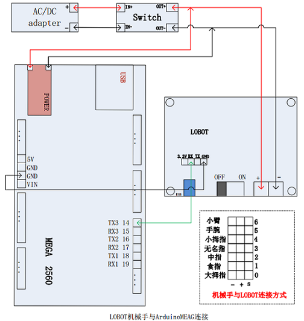
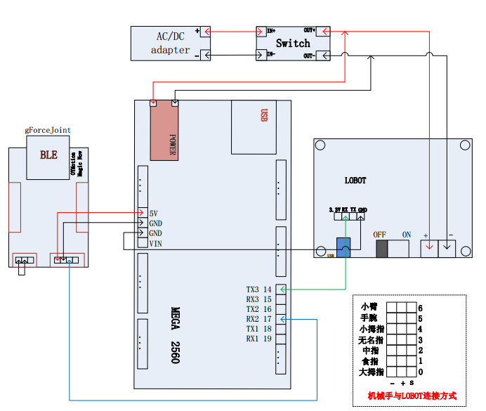

简介
该文档用于介绍如何通过gForce控制LoBot机械手。
在阅读后续文档内容之前，请确保您已经熟悉Arduino,并已经
安装ArduinoIDE。
如何使用gForce控制LoBot机械手
本章节开始详细介绍如何使用gForce控制LoBot机械手，在后续章节中会反复使用gForceJoint/
gForce/gForceSDKArduino/ArduinoMEGA这些名词，具体解释请参考链接。
导入gForceSDKArduino
gForceJoint与ArduinoMEGA的通讯测试

- 如上图所示，连接gForceJoint与ArduinoMEGA
- 使用ArduinoIDE打开
gForceJointTest工程，并更新ArduinoMEGA的固件.(选择
“项目”->“上传”更新固件) - 打开ArduinoIDE里的
串口监视器.(选择“工具”->“串口监视器”打开串口监视器) - 设置串口监视器波特率为115200bps
-
将gForce连接到gForceJoint上，然后做出相应的手势，通过
串口监视器内打印的数据判断是否通讯正常
如果gForceJoint与ArduinoMEGA通讯正常，则继续进行后续章节，否则需要找到并解决通讯失败的问题。
- gForceJoint与ArduinoMEAG连线错误，gForce与gForceJoint未正常连接等可能导致通讯失败
Lobot机械手测试

- 如上图所示连接LOBOT与ArduinoMEAG
- 将ArduinoMEAG与PC通过USB线连接，打开
LobotTest工程，并更新ArduinoMEAG的固件 (选择
“项目”->“上传”更新固件) - 观察Lobot机械手的手势是否正确
如果Lobot机械手的手势不正常，则需要找到并解决该问题，然后在进行下一章节。
- Lobot与ArduinoMEAG连线错误，电池电量不足，及机械手与LOBOT连线方式有误都可能会导致机械手手势错误
gForce与Lobot机械手连接调试

- 如上图所示，连接相应的开发板
- 将ArduinoMEAG与PC连接，打开LobotControlBygForce
工程，并更新ArduinoMEAG固件 (选择
“项目”->“上传”更新固件) - 将gForce与gForceJoint进行连接，试玩机械手的控制。
gForce相关视频
该小节用于介绍如何做好gForce定义的手势及相关gForce应用视频，参考标准手势能够显著提高手势识别率。
问题反馈
在使用过程中有任何问题，欢迎邮件反馈。
* 邮件:kaizhou@oymotion.com